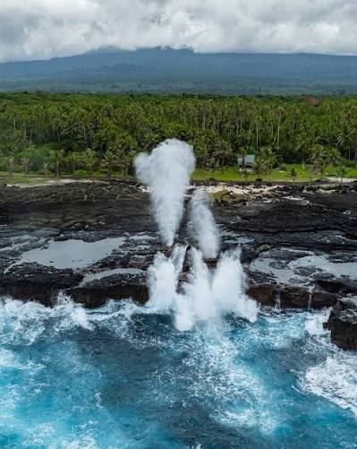

Alofaaga Blowholes
I remember one time when we visited this place as a zone; we tried to capture a photo in a way that it seemed as if we were bending the water out of the blowholes. The first time we visited it was free; then another time we came by, someone was at the entrance charging us a fee. But I'm pretty sure they just let us go in when they found out we were missionaries.
